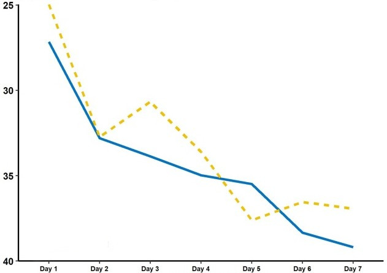

Introduction
L’ivermectine est un médicament largement utilisé en tant que vermifuge, tant pour les animaux que les hommes. Cette molécule est aussi testée dans le développement et la recherche de médicaments contre la COVID-19, pouvant potentiellement limiter les symptômes de cette maladie.
Ainsi, de nombreuses recherches ont été menées afin de démontrer l’efficacité de ce traitement dans la lutte contre le virus et notamment dans la limitation de ses effets indésirables. On s’intéressera ici à deux études dont les conclusions divergent.
Première étude :
Le premier de ces articles, s’intitulant « L’utilisation de l’ivermectine dans le traitement de la COVID-19 : une étude préliminaire » a été réalisé par le groupe éditorial ELSEVIER, géant de la littérature scientifique.
Cet article présente une étude ayant pour but de montrer les effets de ce traitement sur les symptômes de la maladie et sur la réduction de l’infection par le virus.
Ainsi, il se présente sous la forme d’une étude aléatoire faite sur des patients atteint de symptômes légers du COVID-19, pour un total de 32 individus. On les sépare en quatre groupes en fonction de la dose d’Ivermectine qu’on leur donne pour ensuite étudier l’évolution de leurs symptômes et le temps d’obtention de deux test PCR négatifs à la suite.
On se retrouve donc avec quatre groupes :
- Groupe 1 : aucune dose d’ivermectine, composé de 4 individus
- Groupe 2 : dose d’ivermectine faible, composé de 6 individus
- Groupe 3 : dose d’ivermectine moyenne, composé de 14 individus
- Groupe 4 : dose d’ivermectine forte, composé de 7 individus
L’étude montre que le groupe 1 a mis en moyenne 12 jours pour obtenir les tests négatifs, contre 10, 14 et 10 pour les groupe 2, 3 et 4 respectivement.
Elle fournit aussi des graphiques montrant l’évolution de la charge virale en fonction du temps pour les individus de chaque groupe. Ce graphique nous montre que les groupes 2, 3 et 4 ont réduit leur charge virale plus rapidement et efficacement.
Autrement, un tableau montre que des effets secondaires ont été reportés en plus grand nombre dans le groupe 1.
Ces données permettent donc aux chercheurs de conclure que l’Ivermectine permet de réduire plus efficacement l’infection au virus de la COVID-19 et réduire les risques d’effet secondaires.
Cependant, on peut aussi attester que ces réductions sont légère et ne sont pas très significatives. De plus, on peut aussi contester les résultats de cette étude tant elle a été réalisé sur une population restreinte (32 individus) et n’est donc pas représentative.
Deuxième étude :
Attardons nous maintenant à un autre article, cette fois-ci réalisé par la JAMA (Journal of American Medical Association), association à but non lucratif dont la visée est d’aider patients et docteurs. Cette étude se base sur un groupe de 400 patients atteint de la COVID-19 et s’attarde plus sur les symptômes de ces malades.
Ici, les individus sont séparés en deux groupes de 200 personnes : le groupe A qui reçoit une quantité moyenne d’Ivermectine et le groupe B qui reçoit un placebo.
Les chercheurs ont donc étudié le temps de disparition des symptômes des patients de ces deux groupes et la quantité d’effets indésirables reportés.
Les résultats montrent donc une légère amélioration pour le groupe A, la disparition des symptômes se faisant en 10 jours contre 12 pour le groupe B.
Les effets indésirables ont aussi été plus nombreux pour les patients ayant reçu le placebo : par exemple, 52 % ont souffert de mal de tête dans le groupe A, tandis que pour le B, ce taux s’élève à 56 %.
On aussi voir que sur le graphique de l’évolution de la disparition des symptômes en fonction du temps, les deux groupes sont très proches.
Ainsi, l’écart entre les deux groupe est très faible, ce qui fait que le comité de recherche en conclut que l’administration de ce traitement à l’Ivermectine n’a pas amélioré de façon significative la réduction des symptômes de la COVID-19.
Conclusion :
Que penser donc des résultats de ces deux études ? L’ivermectine est-elle donc un remède efficace contre la COVID-19 ?
Ces questions restent encore en suspens en attendant d’autres recherches, notamment de l’Organisation mondiale de la Santé.
Cependant, on peut attester dès maintenant que la première étude n’est pas significative en comparaison à la deuxième. En effet, le nombre de patients sur lequel le test a été effectué est trop faible et les résultats trop proches pour arriver à une quelconque conclusion.
On peut de plus se poser la question de la légitimité d’ELSEVIER, ayant déjà été à l’origine de publications mensongères, accompagnée par le paiement de certains groupes pharmaceutiques. Ainsi, la deuxième étude paraît donc bien plus révélatrice et légitime.
Pour l’instant, rien n’est certain quant à l’efficacité de ce médicament, attendant des études ultérieures. Cependant, en temps de crise, il est important de faire confiance aux études les plus rigoureuses et indépendantes, remettant en cause ce que l’on peut lire.